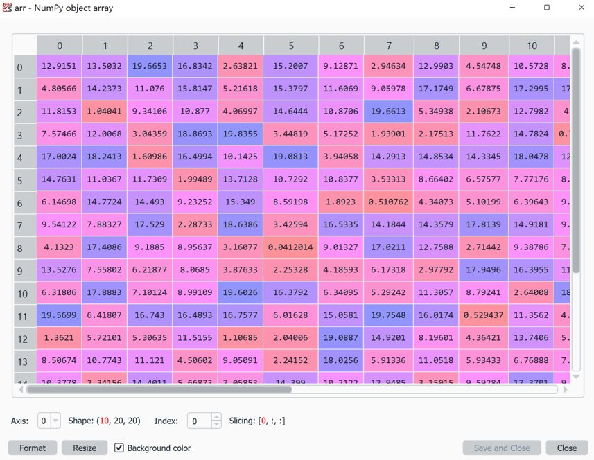

17. Numerische Daten in Python mit NumPy – Teil 2#
Im ersten NumPy-Kapitel ging es um die Grundlagen: Arrays erzeugen, ihre Form verstehen, Werte auswählen, elementweise rechnen, Masken verwenden und Kennzahlen entlang verschiedener Achsen berechnen.
Jetzt kommen einige weitere Werkzeuge hinzu, die besonders beim Sortieren, Suchen, Auswählen und Kombinieren größerer Arrays praktisch sind.
17.1. Größere Arrays anschauen#
Bei größeren Arrays wird print() schnell unübersichtlich.
In VS Code können Variablen beim Debuggen im Bereich VARIABLES untersucht werden. Für NumPy-Arrays steht über die Python-/Jupyter-Werkzeuge außerdem ein Data Viewer zur Verfügung.
import numpy as np
rng = np.random.default_rng()
arr = rng.random((10, 20, 20))
print(arr.shape)
Bei drei oder mehr Dimensionen betrachtet man typischerweise gezielt einzelne Slices, Kennzahlen oder Visualisierungen statt das komplette Array auszugeben.
Die folgende Abbildung stammt noch aus der früher verwendeten IDE Spyder. Sie illustriert aber weiterhin das Grundprinzip, bei höherdimensionalen Arrays eine Achse und einen Index auszuwählen:

17.2. Slices und Views#
Ein wichtiges NumPy-Detail: Einfaches Slicing erzeugt häufig keine unabhängige Kopie, sondern einen sogenannten View auf dieselben Daten.
import numpy as np
data = np.array([10, 20, 30, 40, 50])
part = data[1:4]
part[0] = 999
print(part)
print(data)
Die Änderung in part ist auch in data sichtbar.
Wenn das nicht gewünscht ist:
import numpy as np
data = np.array([10, 20, 30, 40, 50])
part = data[1:4].copy()
part[0] = 999
print(part)
print(data)
Damit ist part unabhängig.
17.3. Sortieren mit sort()#
Mit np.sort() erhalten wir eine sortierte Kopie:
import numpy as np
values = np.array([6, 2, 9, 1, 5])
sorted_values = np.sort(values)
print(sorted_values)
print(values)
Das ursprüngliche Array bleibt dabei unverändert.
Die Methode .sort() sortiert dagegen das Array selbst:
import numpy as np
values = np.array([6, 2, 9, 1, 5])
values.sort()
print(values)
17.3.1. Sortieren entlang einer Achse#
Bei 2D-Arrays wird entlang einer Achse sortiert:
import numpy as np
data = np.array(
[[8, 2, 6],
[3, 9, 1]]
)
print(np.sort(data, axis=0))
print(np.sort(data, axis=1))
Vor dem Ausführen: Welche Werte werden jeweils miteinander verglichen?
17.4. argsort(): Sortierreihenfolge als Indizes#
Manchmal wollen wir nicht nur sortierte Werte, sondern wissen, an welchen Positionen diese Werte ursprünglich standen.
Dafür gibt es np.argsort():
import numpy as np
scores = np.array([51, 88, 73, 95, 64])
order = np.argsort(scores)
print(order)
print(scores[order])
order enthält die Indizes, die scores aufsteigend sortieren würden.
Für die höchsten drei Werte können wir beispielsweise schreiben:
top3_indices = order[-3:][::-1]
print(top3_indices)
print(scores[top3_indices])
Das ist besonders praktisch, wenn parallel weitere Daten existieren:
import numpy as np
names = np.array(["Ada", "Linus", "Grace", "Guido"])
scores = np.array([82, 91, 88, 75])
order = np.argsort(scores)[::-1]
print(names[order])
print(scores[order])
17.5. Mehrdimensionale Daten mit argsort()#
Bei mehrdimensionalen Arrays bezieht sich argsort() ebenfalls auf eine bestimmte Achse:
import numpy as np
data = np.array(
[[30, 10, 20],
[ 4, 6, 5]]
)
indices = np.argsort(data, axis=1)
print(indices)
Mit np.take_along_axis() können diese Indizes auf das ursprüngliche Array angewendet werden:
sorted_data = np.take_along_axis(data, indices, axis=1)
print(sorted_data)
17.6. argpartition(): nur die größten oder kleinsten Elemente finden#
Wenn wir nur einige besonders große oder kleine Werte brauchen, müssen wir nicht zwingend das gesamte Array vollständig sortieren.
np.argpartition() liefert Indizes für eine partielle Sortierung.
import numpy as np
values = np.array([12, 4, 19, 3, 25, 8, 17])
indices = np.argpartition(values, -3)[-3:]
print(indices)
print(values[indices])
Damit bekommen wir die drei größten Werte, aber ihre Reihenfolge innerhalb dieser Auswahl ist nicht garantiert sortiert.
Falls wir sie anschließend sortiert ausgeben wollen:
top_values = values[indices]
top_values = np.sort(top_values)[::-1]
print(top_values)
argpartition() ist besonders interessant, wenn nur die Top-k-Elemente eines großen Arrays benötigt werden.
17.7. Nach mehreren Schlüsseln sortieren: lexsort()#
np.lexsort() kann anhand mehrerer Sortierschlüssel eine gemeinsame Reihenfolge bestimmen.
Beispiel mit Namen:
import numpy as np
surnames = np.array(["Hertz", "Galilei", "Hertz"])
first_names = np.array(["Heinrich", "Galileo", "Gustav"])
order = np.lexsort((first_names, surnames))
print(order)
print(surnames[order])
print(first_names[order])
Wichtig:
Bei
lexsort()ist der letzte angegebene Schlüssel der primäre Sortierschlüssel.
Im Beispiel wird also zuerst nach surnames sortiert. Bei gleichen Nachnamen entscheidet first_names.
Das gleiche Prinzip funktioniert mit numerischen Daten:
import numpy as np
group = np.array([2, 1, 2, 1, 2])
score = np.array([80, 90, 70, 85, 90])
order = np.lexsort((score, group))
print(group[order])
print(score[order])
Hier ist group der primäre Schlüssel und score löst Gleichstände innerhalb derselben Gruppe auf.
17.8. Positionen mit where() finden#
Boolesche Masken geben direkt die passenden Werte zurück:
import numpy as np
values = np.array([4, 12, 7, 19, 3, 14])
print(values[values >= 10])
Manchmal brauchen wir stattdessen die Positionen der Treffer.
Dafür kann np.where() verwendet werden:
indices = np.where(values >= 10)
print(indices)
print(values[indices])
Bei einem 1D-Array enthält das Ergebnis ein Tupel mit einem Index-Array.
Bei 2D-Daten werden Zeilen- und Spaltenpositionen getrennt geliefert:
import numpy as np
data = np.array(
[[2, 9, 3],
[8, 1, 7]]
)
rows, columns = np.where(data >= 7)
print(rows)
print(columns)
print(data[rows, columns])
17.9. Maximum und Minimum finden: argmax() und argmin()#
Wenn nicht nur der größte Wert, sondern seine Position benötigt wird:
import numpy as np
values = np.array([5, 11, 3, 18, 7])
print(values.max())
print(values.argmax())
print(values.min())
print(values.argmin())
Auch hier kann bei mehrdimensionalen Arrays eine Achse angegeben werden.
17.10. Arrays zusammenfügen#
Mit np.concatenate() werden Arrays entlang einer vorhandenen Achse verbunden.
17.10.1. 1D#
import numpy as np
a = np.array([1, 2, 3])
b = np.array([4, 5, 6])
combined = np.concatenate((a, b))
print(combined)
17.10.2. 2D: untereinander#
import numpy as np
a = np.array(
[[1, 2],
[3, 4]]
)
b = np.array(
[[5, 6],
[7, 8]]
)
combined = np.concatenate((a, b), axis=0)
print(combined)
print(combined.shape)
17.10.3. 2D: nebeneinander#
combined = np.concatenate((a, b), axis=1)
print(combined)
print(combined.shape)
Die Dimensionen müssen dabei außerhalb der Verbindungsachse zusammenpassen.
NumPy bietet außerdem bequemere Kurzformen wie np.vstack() und np.hstack(). Für den Einstieg ist concatenate(..., axis=...) aber besonders hilfreich, weil die verwendete Achse ausdrücklich sichtbar bleibt.
17.11. Form wieder auf 1D bringen#
Aus dem ersten Kapitel kennen wir reshape().
Für eine eindimensionale Darstellung gibt es unter anderem .flatten():
import numpy as np
data = np.arange(1, 7).reshape(2, 3)
flat = data.flatten()
print(data)
print(flat)
flatten() erzeugt eine Kopie.
Mit ravel() kann NumPy dagegen nach Möglichkeit eine flache Ansicht auf dieselben Daten liefern. Für Code, bei dem Unabhängigkeit wichtig ist, sollte dieser Unterschied bewusst sein.
17.12. Mathematische Funktionen auf ganzen Arrays#
NumPy-Funktionen arbeiten typischerweise direkt elementweise auf Arrays:
import numpy as np
x = np.array([0.0, 0.5, 1.0])
print(np.sin(x))
print(np.exp(x))
print(np.sqrt(x))
Auch hier brauchen wir keine eigene Schleife.
Ein typisches Beispiel für eine regelmäßig verteilte x-Achse ist np.linspace():
import numpy as np
x = np.linspace(0, 1, num=5)
print(x)
Bei linspace() geben wir im Unterschied zu arange() die gewünschte Anzahl der Werte an.
17.13. Zufallsdaten für kleine Simulationen#
Aus Teil 1 kennen wir den modernen Zufallsgenerator:
import numpy as np
rng = np.random.default_rng()
dice_rolls = rng.integers(1, 7, size=1000)
print(dice_rolls.shape)
print(dice_rolls.mean())
print(np.sum(dice_rolls == 6))
Damit können sehr einfach größere Mengen zufälliger Daten erzeugt und anschließend mit den bereits bekannten Array-Operationen ausgewertet werden. s